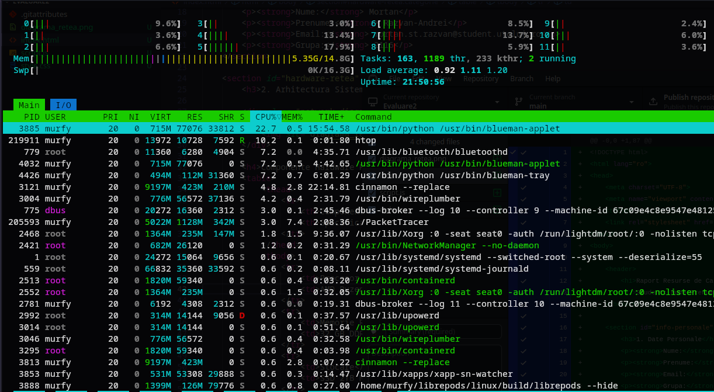
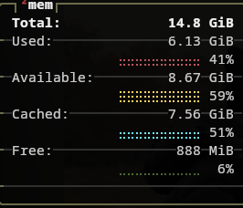
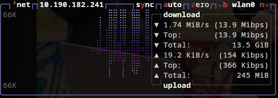

Nume: Mortan
Prenume: Razvan-Andrei
Email: mortan.st.razvan@student.utcluj.ro
Grupa: 2116
| Componenta | Specificatie |
|---|---|
| Procesor (CPU) | AMD Ryzen 5 7535HS |
| Memorie RAM | 32 GB DDR4 |
| Stocare | SSD 2TB NVMe |
| Placa Video | NVIDIA GeForce RTX 4050 |
| Tip conexiune Internet | Fibra Optica (Digi) - 1Gbps - Bandwith Local 10Gbps - Bandwith Digi 2.5Gbps |
| Ip Local: 192.168.1.136 | Subnet Mask: 255.255.255.0 |
(Double-click in aceasta zona pentru a porni slideshow-ul)
Consum CPU
Consum Memorie
Activitate Retea
